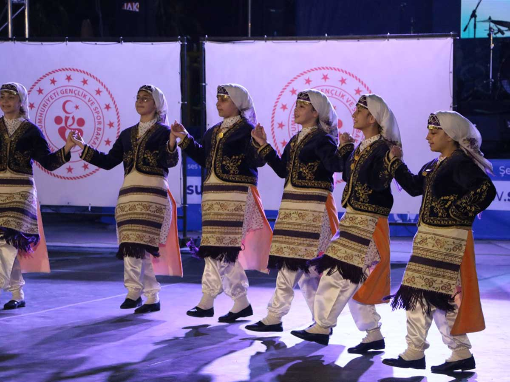
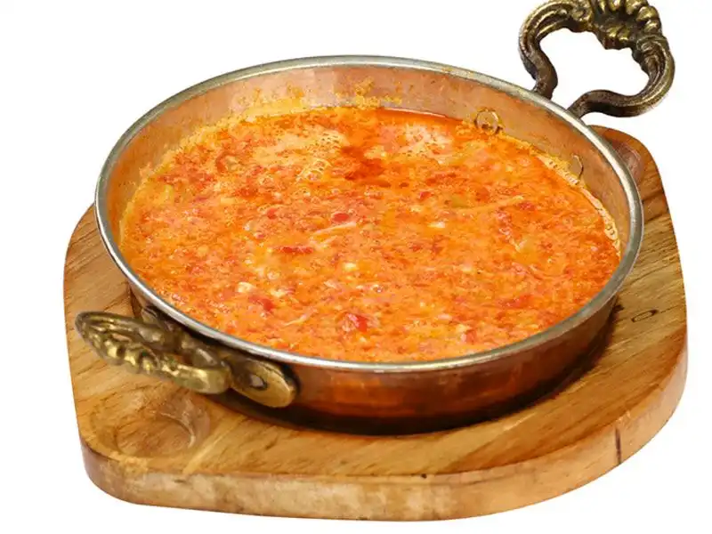
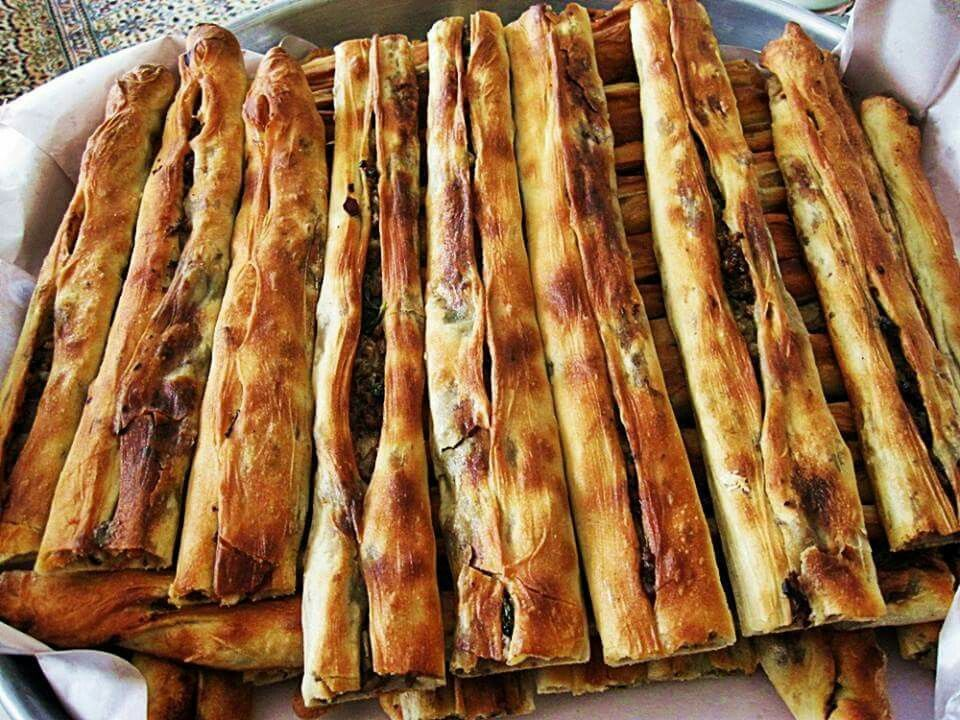

Samsun'un Mirası
Doğal Güzellikler
Samsun yeşilin her tonuyla dillere destan. Sahilleri, plajları ve ormanlarıyla Karadeniz'in incisi.

Halk Oyunları
Samsun'un kendine özgü, hareketli ve coşkulu halk oyunları, kültürel mirasın en canlı örneğidir.

Çakallı Menemeni
Sadece domates biber değil; kaşarın ve özel pişirme tekniğinin buluştuğu efsane lezzet.

Bafra Pidesi
Çıtır çıtır hamuru ve özel kıymalı içiyle Pazar kahvaltılarının vazgeçilmezi.
